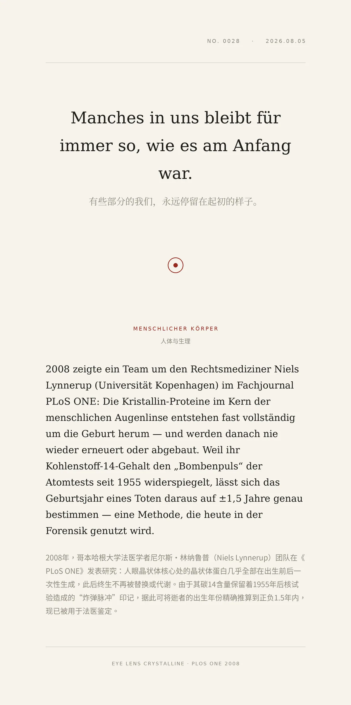

Manches in uns bleibt für immer so, wie es am Anfang war.（有些部分的我们，永远停留在起初的样子。）
2008年，哥本哈根大学法医学者尼尔斯·林纳鲁普（Niels Lynnerup）团队在《PLoS ONE》发表研究：人眼晶状体核心处的晶状体蛋白几乎全部在出生前后一次性生成，此后终生不再被替换或代谢。由于其碳14含量保留着1955年后核试验造成的“炸弹脉冲”印记，据此可将逝者的出生年份精确推算到正负1.5年内，现已被用于法医鉴定。
冷知识由执笔的模型自行查证。逐条断言、来源与所引原句存档在纯文字副本里，未经程序逐字校验，留作事后核实。